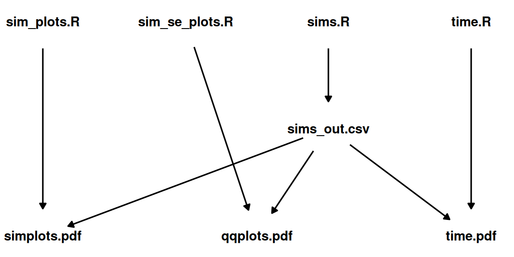
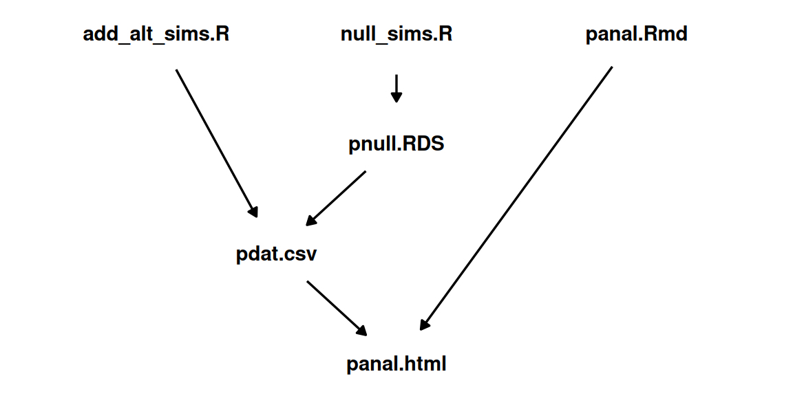
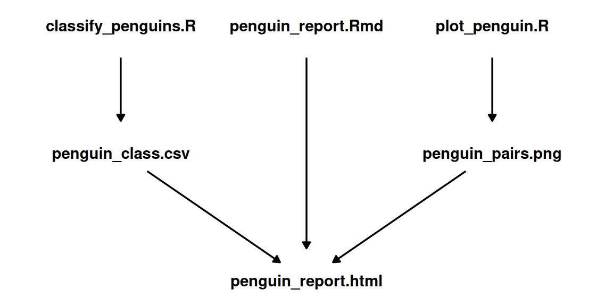

Managing Workflows with GNU Make
Learning Objectives
- Automated workflow with GNU make.
- Required Reading:
- Additional Resources
Installation Mac/Linux
- If you are using Mac or Linux, you probably have
makealready installed.- To verify, open up the terminal and run
make --version
- To verify, open up the terminal and run
Installation Windows
- This is one of the cases where Windows is really inferior to Mac and Linux. I will show you two pipelines. You only need to choose one pipeline.
Use Rtools (light)
Download and install Rtools: https://cran.r-project.org/bin/windows/Rtools/
Restart R.
Change R Studio’s settings “Global Options… > Terminal > New terminals open with” so that it reads “Windows Powershell”. This will make it so that the terminal is Windows PowerShell, not git bash (so it will look a little weird and act a little differently).
Open a new terminal. Again, this is a Windows PowerShell.
Always run
makein the Windows PowerShell from R Studio. This pipeline won’t work if you try to directly open the PowerShell outside of R Studio.You can always convert the terminal back to git bash later.
To verify
makeis installed, runmake --versionin the Windows PowerShell.I am not a big fan of RStudio Projects, but if you like them then there is some R Studio
makefunctionality when you use an RStudio Project (https://stat545.com/make-test-drive.html). This lets you avoid using Windows PowerShell.
Windows Subsystem for Linux (heavy)
Only start this if you are willing to spend a few hours fiddling around your computer.
You can install Ubuntu on Windows to use all of its powerful features. This is what you would need to do for more advanced computational operations. This is how I use Windows.
But on Ubuntu, you’ll need to install a separate version of R, all of the R packages that you usually use, and git.
NOTE: This strategy could take up to a gigabyte of storage.
Install Ubuntu using these directions: https://ubuntu.com/wsl
Open up Ubuntu (this will be a shell).
Follow the instructions on CRAN (https://cran.r-project.org/) to install R for Ubuntu inside the Ubuntu shell.
In Ubuntu open up the command line for R
RIn the R command prompt, install all of the R packages you will need with
install.packages(). You can exit R afterwards withq().Change R Studio’s settings “Global Options… > Terminal > New terminals open with” so that it reads “Bash (Windows Subsystem for Linux)”.
Open up a new terminal, and you should now be using Ubuntu for your terminal.
To verify
makeis installed, runmake --versionin the Ubuntu terminal.
Motivation
There are a lot of steps in a data analysis
- Download data (
httr)|>
tidy data (dplyr,tidyr)|>
exploratory data analysis (ggplot2,dplyr)|>
statistical analysis (stats,broom,tidymodels)|>
present results (shiny,rmarkdown,ggplot2).
- Download data (
Each of these steps should be done in separate files. But a more typical pipeline would include multiple files for each step.
- Download multiple datasets using multiple scripts
- Breakdown complex tidying into multiple scripts.
- Explore many aspects of your data, using multiple scripts.
- Modify your statistical models based on model-checks.
- Develop multiple reports on different aspects of your project.
Files downstream in this pipeline typically depend on files upstream in this pipeline.
Here is a really basic example from a recent project of mine. Each node is a file name. The direction of the arrows indicates the dependency between the files. E.g. “sims.R” is used to create “sims_out.csv”.
The top row contains R scripts. The middle row contains some simulation output (sims_out.csv), and the bottom row contains the output of my analyses.
If I make a modification to “time.R”, I would only need to re-generate “time.pdf”, since that is the only downstream file.
However, if I modify “sims.R” and re-generate “sims_out.csv”, then I should also re-generate “simplots.pdf”, “qqplots.pdf”, and “time.pdf” because all of those files are created using “sims_out.csv”.
Having to manually remember to re-run all these scripts is prone to error (because of forgetfulness, tediousness, etc), so ideally there should be some automated way to know that when a file upstream as been changed, then all downstream files need to be re-generated.
This is exactly what make does!
Make
You place all commands for
makein a file exactly titled “Makefile”. You can create this file in the terminal viatouch Makefile
Rules
Inside the Makefile, you prepare a series of rules of the form
target: prereq_1 prereq_2 prereq_3 ... first bash command to make target second bash command and so onEach rule contains three things: a target, prerequisites, and commands.
targetis the name of the file that will be generated.prereq_1,prereq_2,prereq_3, etc are the names of the files which are used to generatetarget. These can be datasets, R scripts, etc.Each subsequent line is a bash command that will be evaluated in the terminal in the order listed. This sequence of commands is sometimes called a recipe.
- IMPORTANT: Make sure each bash command has one tab (not spaces) at the start of the line. If you copy and paste a Makefile from a web site then usually tabs are converted to spaces and produce an error!
- From the terminal, it is possible to evaluate R scripts, python scripts, and knit R Markdown files.
- You can also use the usual bash commands you are used do (
touch,cp,mv,rm, etc…) - There are tons of other commands that you can install that allow you to do things like download files (
curlandwget), unzip files (7zandtar),convertimage files, compile LaTeX documents, etc…
Useful bash commands for data science
Run an R script
R CMD BATCH --no-save --no-restore input_file.R output_file.RoutMake sure to change “input_file.R” and “output_file.Rout”
- The
--no-save --no-restoreoptions make sure that you are working with a clean environment and that you don’t save this environment after the command is executed. This is a good thing for reproducibility.
- The
Render a Quarto Document
quarto render quarto_file.qmdUse Quarto to Render an Jupyter Notebook (
.ipynbDocument):quarto render notebook.ipynb --executeKnit an R Markdown file
Rscript -e "library(rmarkdown);render('rmarkdown_file.Rmd')"Make sure to change “rmarkdown_file.Rmd”
Run python script
python3 input_file.pyMake sure to change “input_file.py”
Download data from the web
wget --no-clobber url_to_data
Phony Targets
If you have multiple, related, final outputs, it is common to place these as prerequisites to “phony” targets:
.PHONY : phony_target phony_target : target1 target2 target3 ...where “phony_target” is a name you provide to represent the operation being performed.
“Phony” targets are not real files. They are just convenient names to use to describe a collection of targets that should be generated.
At the top of the makefile, you then list the phony targets after
all:.PHONY : all all : phony_target1 phony_target2 phony_target3 ...NOTE: It is important to have
all : phony_target1 phony_target2as the very first rule because by defaultmakewill only evaluate the very first rule in the file. So ifallis first, thenmakewill evaluate all targets.
Pseudo-code for Makefile
.PHONY : all
all : phony_target1 phony_target2
.PHONY : phony_target1
phony_target1 : target1 target2
.PHONY : phony_target2
phony_target2 : target3
# Comment 1
target1 : prereq1.R data0.csv data1.RDS
R CMD BATCH --no-save --no-restore prereq1.R prereq1_out.Rout
# Comment 2
target2 : prereq2.py data2.csv
python prereq2.py
# Comment 3
target3 : prereq3.Rmd
Rscript -e "library(rmarkdown);render('prereq3.Rmd')"Evaluate a makefile
You can generate all target files by running the following in the terminal
makeYou can run just the targets in a phony target by specifying the phony target
make phony_targetMake will check if any of the prerequisites have changes for each
targetand, if so, will re-run the bash commands of that rule.Makewill not re-run commands if the prerequisites have not changed. That is, if no upstream files totargetwere modified, thentargetwill not be re-generated. This makesmakevery efficient.
Working directory considerations
tl;dr
- For R and the terminal: Assume the working directory is the location of the Makefile.
- For R Markdown: Assume the working directory is the location of the Rmd file.
So if your file structure is
Makefile analysis/script.R analysis/report.Rmd data/data.csvThen you need specify your targets according to this structure
data/data.csv : analysis/script.R R CMD BATCH --no-save --no-restore analysis/script.RNOTE that the following will not work because each command is executed in its own subshell (assuming the working directory is the location of the Makefile):
# DOES NOT WORK data/data.csv : analysis/script.R cd analysis R CMD BATCH --no-save --no-restore script.RBut you can get around this by putting these commands on one line, with each command separated by a semicolon:
# Works, but not recommended data/data.csv : analysis/script.R cd analysis; R CMD BATCH --no-save --no-restore script.RAny file manipulation in “script.R” needs to be done assuming the working directory is where Makefile is (notice the single dot):
library(readr) dat <- read_csv("./data/data.csv")However, confusingly, when you render an R Markdown file using
knitr, you need to assume the working directory is the location of the R Markdown file, not the location ofMakefile. So in “report.Rmd” you would write (notice the double dots)library(readr) dat <- read_csv("../data/data.csv")
A worked example
I created a repo with a very basic example of using a Makefile: https://github.com/data-science-master/pvalue_sims
The files after everything is evaluated are:
- Makefile
- Readme.Rmd
- Readme.md
- analysis
- add_alt_sims.R
- null_sims.R
- panal.html
- panal.Rmd
- output
- add_alt_sims.Rout
- null_sims.Rout
- pdat.csv
- pnull.RDS
These files have the following dependency structure:

The Makefile that organizes this structure is
.PHONY : all all : sims .PHONY : sims sims : analysis/panal.html analysis/panal.html : analysis/panal.Rmd output/pdat.csv Rscript -e "library(rmarkdown);render('analysis/panal.Rmd')" output/pnull.RDS : analysis/null_sims.R R CMD BATCH --no-save --no-restore analysis/null_sims.R output/null_sims.Rout output/pdat.csv : analysis/add_alt_sims.R output/pnull.RDS R CMD BATCH --no-save --no-restore analysis/add_alt_sims.R output/add_alt_sims.RoutExercise: Clone this repo and run
makein the terminal.Exercise: What happens when you modify “panal.Rmd” and you rerun
make?Exercise: What happens when you modify “add_alt_sims.R” and rerun
make?Exercise: What happens when you modify “null_sims.R” and rerun
make?
Your turn
Clone the penguins repo: https://github.com/data-science-master/penguins
Use your new skills to create a makefile to manage a small project that examines the really cool Palmer Penguins data.
The files in the final report are:
- Makefile
- Readme.Rmd
- Readme.md
- analysis
- classify_penguins.R
- penguin_report.html
- penguin_report.Rmd
- plot_penguin.R
- output
- penguin_class.csv
- penguin_pairs.png
These files have the following dependency structure:

Make sure you have the necessary R packages installed:
library(tidyverse) library(tidymodels) library(GGally) library(palmerpenguins) library(randomForest)Modify the Makefile to automatically manage this pipeline.
Run
makein the terminal to generate all of the output (penguin_class.csv, penguin_pairs.png, and penguin_report.html)Change the color scheme in the pairs plot and re-run
make.Correct the date field in the YAML header in “penguin_report.html” and re-run
make
Variables
You usually define variables at the top of a file use an equals sign (
=).my_first_variable = fig.pdfYou access a variable value by placing the variable name in parentheses after a dollar sign
$.So when a makefile comes across
$(my_first_variable), it will actually read it asfig.pdf.For example, suppose the file
fig_create.Rgenerates multiple pdf files:fig1.pdf,fig2.pdf, andfig3.pdf. Then we could write this rule in the following two equivalent ways:fig1.pdf fig2.pdf fig3.pdf : fig_create.R R CMD BATCH --no-save --no-restore fig_create.Rfigs = fig1.pdf fig2.pdf fig3.pdf $(figs) : fig_create.R R CMD BATCH --no-save --no-restore fig_create.RIf you do not like writing
R CMD BATCH --no-save --no-restoreeach time, then you can save this command as a variable. The following two rules are equivalent:fig.pdf : script.R R CMD BATCH --no-save --no-restore script.Rrexec = R CMD BATCH --no-save --no-restore fig.pdf : script.R $(rexec) script.RExercise: Modify the following Makefile (from the p-value exercise) to use variables that reduce the amount of copying/pasting:
.PHONY : all all : sims .PHONY : sims sims : analysis/panal.html analysis/panal.html : analysis/panal.Rmd output/pdat.csv Rscript -e "library(rmarkdown);render('analysis/panal.Rmd')" output/pnull.RDS : analysis/null_sims.R R CMD BATCH --no-save --no-restore analysis/null_sims.R output/null_sims.Rout output/pdat.csv : analysis/add_alt_sims.R output/pnull.RDS R CMD BATCH --no-save --no-restore analysis/add_alt_sims.R output/add_alt_sims.Rout
Automatic Variables
There are a lot of automatic variables that you can use to make your Makefile more concise.
Here are the ones I use:
$@: The target of the rule.$<: The first prerequisite.$^: All of the prerequisites, with spaces between them.$(@D): The directory part of the target, with the trailing slash removed.$(@F): The file part of the target$(<D): The directory part of the first prerequisite.$(<F): The file part of the first prerequisite.$(basename names): Extracts all but the suffix of each file name in names.
Example: Suppose I have the following rule:
output/figs/foo.pdf : analysis/scripts/gaa.R data/hii.csv R CMD BATCH --no-save --no-restore analysis/scripts/gaa.RThen the following are these automatic variable values:
$@: output/figs/foo.pdf$<: analysis/scripts/gaa.R$^: analysis/scripts/gaa.R data/hii.csv$(@D): output/figs$(@F): foo.pdf$(<D): analysis/scripts$(<F): gaa.R$(basename $(<F)): gaa
For example, if you always place the R script first that generates the target, and the datasets that the R script uses second, then the following is typically how I evaluate the R script.
rexec = R CMD BATCH --no-save --no-restore figure.pdf : script.R data1.csv data2.csv $(rexec) $< $(basename $(<F)).RoutThe variables and automatic variables would interpret this as
figure.pdf : script.R data1.csv data2.csv R CMD BATCH --no-save --no-restore script.R script.RoutExercise: Re-write the following to use an automatic variable instead of the Rmd’s file name in the recipe.
report.html : report.Rmd Rscript -e "library(rmarkdown);render('report.Rmd')"
Competitors
There are lots of pipeline management competitors to
make. The most-likely that you’ll run across areBut
makehas been around since the 1970s, is widely used, and isn’t going anywhere.It is also relatively simple compared to more sophisticated pipeline management tools, so I think that makes it easier to setup and use with fewer chances for bugs.
Comments
#for comments in a makefile.